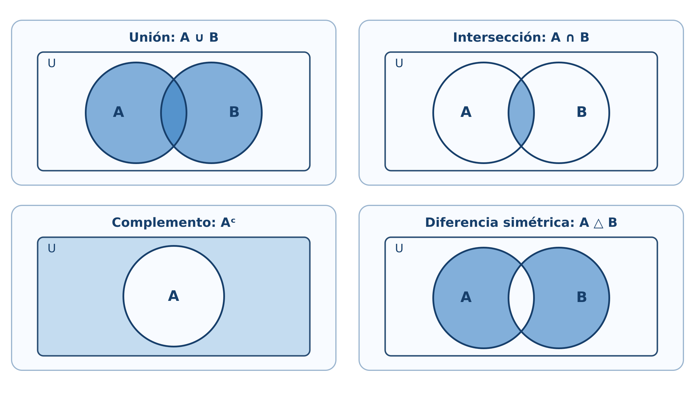
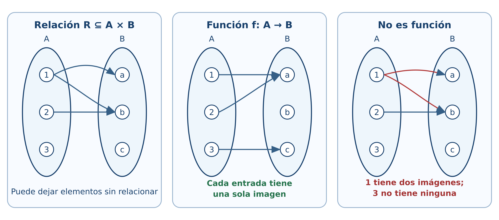
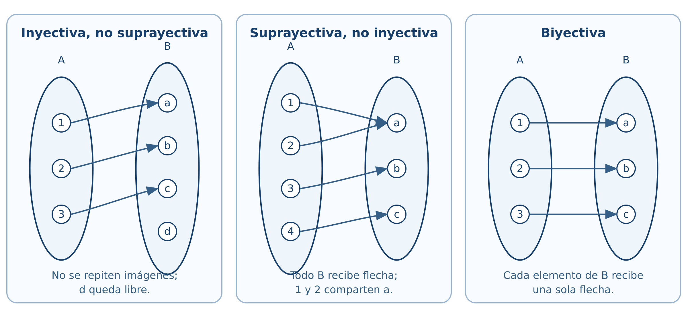
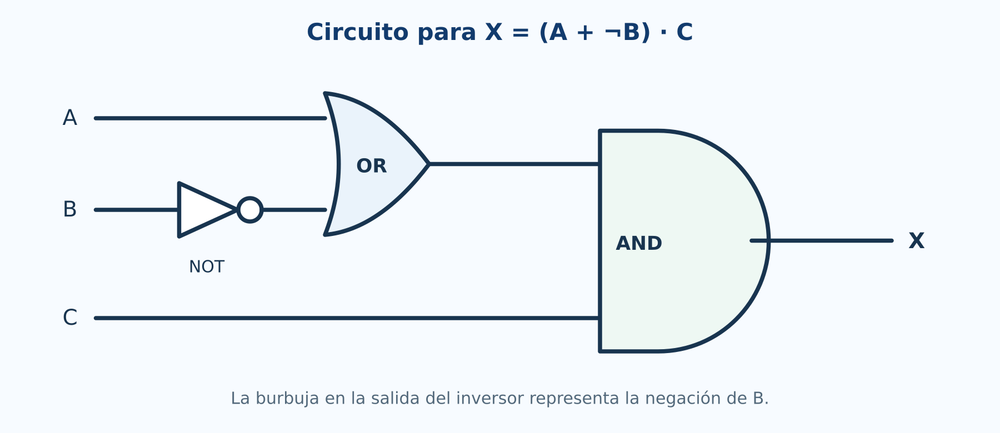
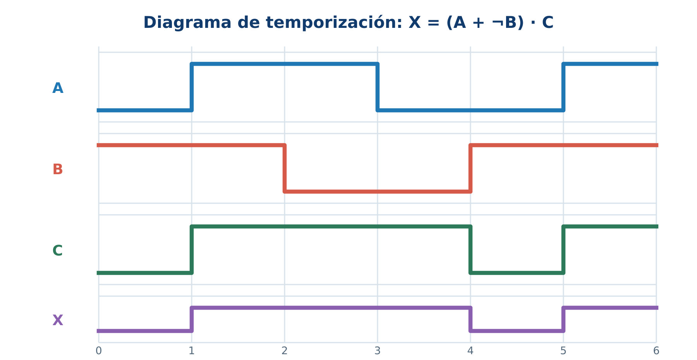

1 Lógica y conjuntos
Experimentación con R, GeoGebra y circuitos
Introducción
Este capítulo transforma los conceptos de lógica y conjuntos en objetos que pueden calcularse, visualizarse y comprobarse. Cada bloque parte de una idea matemática, la resuelve manualmente y después utiliza R como laboratorio. GeoGebra se reservará para las representaciones dinámicas y Shiny para actividades en las que el estudiante modifique datos y reciba retroalimentación.
El código inicial utiliza R base (R Core Team 2026). De esta forma puede ejecutarse en RStudio o en el cuaderno de Google Colab sin instalar paquetes.
El cuaderno reúne las nueve secciones, las aplicaciones a sistemas digitales, visualizaciones en R y ejercicios de comprobación. Puede abrirse en Colab o descargarse para conservar una copia local.
Objetivos
Al finalizar, el lector podrá:
- representar conjuntos finitos mediante vectores de R;
- construir tablas de verdad;
- evaluar proposiciones abiertas sobre dominios finitos;
- comprobar equivalencias lógicas y leyes de conjuntos;
- resolver problemas de inclusión-exclusión;
- representar productos cartesianos, relaciones y funciones;
- clasificar funciones finitas;
- experimentar con correspondencias biyectivas;
- comprobar simplificaciones booleanas y diseñar circuitos.
1.1 Lenguaje de conjuntos
Situación inicial
Consideremos el universo
\[ U=\{1,2,\ldots,10\}, \]
el conjunto \(A\) de números pares y el conjunto \(B\) de números primos en \(U\):
\[ A=\{2,4,6,8,10\},\qquad B=\{2,3,5,7\}. \]
En R, un conjunto finito puede representarse mediante un vector sin elementos repetidos.
U <- 1:10
A <- c(2, 4, 6, 8, 10)
B <- c(2, 3, 5, 7)
A
BEl operador %in% comprueba pertenencia.
4 %in% A
5 %in% A
A %in% BPara comprobar \(A\subseteq B\), no basta que algún elemento pertenezca; todos deben pertenecer:
es_subconjunto <- function(X, Y) {
all(X %in% Y)
}
es_subconjunto(c(2, 4), A)
es_subconjunto(A, B)La igualdad de conjuntos debe ignorar el orden:
setequal(c(1, 2, 3), c(3, 2, 1))
identical(c(1, 2, 3), c(3, 2, 1))La función setequal() devuelve verdadero, mientras que identical() devuelve falso, porque esta última compara vectores ordenados, no conjuntos.
Conjunto potencia
El siguiente código genera todos los subconjuntos de un conjunto finito:
conjunto_potencia <- function(A) {
resultado <- list(A[FALSE])
if (length(A) > 0) {
for (k in seq_len(length(A))) {
resultado <- c(
resultado,
combn(A, k, simplify = FALSE)
)
}
}
resultado
}
P <- conjunto_potencia(c("a", "b", "c"))
P
length(P)El resultado contiene \(2^3=8\) subconjuntos, incluido el conjunto vacío.
Use la salida de conjunto_potencia() para elegir dos subconjuntos de \(\{a,b,c\}\). Después, compruebe su unión, intersección y diferencia en el laboratorio de operaciones con conjuntos. Así se coordinan la enumeración en R y la representación mediante regiones de Venn.
1.2 Proposiciones y conectivos lógicos
Construcción de una tabla de verdad
R representa verdadero y falso mediante TRUE y FALSE. Las combinaciones para dos proposiciones se generan así:
tabla <- expand.grid(
q = c(TRUE, FALSE),
p = c(TRUE, FALSE)
)[, c("p", "q")]
implica <- function(p, q) {
(!p) | q
}
tabla$no_p <- !tabla$p
tabla$p_y_q <- tabla$p & tabla$q
tabla$p_o_q <- tabla$p | tabla$q
tabla$p_implica_q <- implica(tabla$p, tabla$q)
tabla$p_sii_q <- tabla$p == tabla$q
tablaLa implicación se implementa mediante la equivalencia
\[ p\Rightarrow q\equiv\neg p\lor q. \]
Tautologías, contradicciones y contingencias
Una expresión es tautología si todas sus filas son verdaderas:
es_tautologia <- function(valores) all(valores)
es_contradiccion <- function(valores) all(!valores)
tercero_excluido <- tabla$p | !tabla$p
contradiccion <- tabla$p & !tabla$p
es_tautologia(tercero_excluido)
es_contradiccion(contradiccion)Para comprobar
\[ p\Rightarrow(q\land r) \equiv (p\Rightarrow q)\land(p\Rightarrow r), \]
generamos las ocho combinaciones posibles:
t3 <- expand.grid(
r = c(TRUE, FALSE),
q = c(TRUE, FALSE),
p = c(TRUE, FALSE)
)[, c("p", "q", "r")]
izquierda <- implica(t3$p, t3$q & t3$r)
derecha <- implica(t3$p, t3$q) & implica(t3$p, t3$r)
data.frame(t3, izquierda, derecha, equivalentes = izquierda == derecha)
all(izquierda == derecha)La última instrucción devuelve verdadero; la equivalencia se cumple en todas las filas.
Interactivo: tabla de verdad
Cambie la expresión y los valores de entrada. La fila activa se señala en la tabla y la salida se actualiza inmediatamente.
1.3 Cuantificadores y equivalencias lógicas
Proposiciones abiertas sobre dominios finitos
Sea
\[ D=\{-4,-3,\ldots,4\} \]
y sea \(p(x):x^2\le 4\). Su conjunto solución se obtiene filtrando el dominio:
D <- -4:4
p <- D^2 <= 4
data.frame(x = D, p_x = p)
D[p]El conjunto solución es \(\{-2,-1,0,1,2\}\).
En un dominio finito, all() representa el cuantificador universal y any() el existencial:
all(D^2 >= 0) # para todo x en D, x^2 >= 0
any(D^2 == 4) # existe x en D tal que x^2 = 4Verificar una propiedad en muchos valores no demuestra que se cumpla para todos los números reales. R sí puede decidir un cuantificador sobre un dominio finito completamente enumerado. Para dominios infinitos, la demostración matemática sigue siendo indispensable.
Negación de cuantificadores
La equivalencia
\[ \neg(\forall x\in D\,p(x)) \equiv \exists x\in D\,\neg p(x) \]
se comprueba con:
lado_izquierdo <- !all(p)
lado_derecho <- any(!p)
c(lado_izquierdo, lado_derecho)No estamos sustituyendo una demostración formal; estamos observando la equivalencia en el dominio elegido.
1.4 Operaciones y propiedades de los conjuntos
Operaciones en R
R incluye funciones directas para unión, intersección y diferencia.
union(A, B)
intersect(A, B)
setdiff(A, B)
setdiff(B, A)El complemento depende del universo:
complemento <- function(X, U) {
setdiff(U, X)
}
complemento(A, U)La diferencia simétrica es
\[ A\triangle B=(A\setminus B)\cup(B\setminus A). \]
diferencia_simetrica <- function(X, Y) {
union(setdiff(X, Y), setdiff(Y, X))
}
diferencia_simetrica(A, B)
Interactivo: operaciones de conjuntos
Seleccione una operación y modifique los elementos de \(A\) y \(B\). El laboratorio calcula el conjunto resultante, su cardinalidad y la región correspondiente.
Comprobación de las leyes de De Morgan
Para los conjuntos concretos \(A,B\subseteq U\), comprobamos
\[ (A\cup B)^c=A^c\cap B^c. \]
lado_izquierdo <- complemento(union(A, B), U)
lado_derecho <- intersect(
complemento(A, U),
complemento(B, U)
)
lado_izquierdo
lado_derecho
setequal(lado_izquierdo, lado_derecho)El laboratorio permite anticipar que \((A\cup B)^c\) y \(A^c\cap B^c\) sombrean la misma región. La comprobación con R verifica el universo finito elegido; la demostración general se realiza mediante pertenencia.
1.5 Cardinalidad de conjuntos finitos y problemas de conteo
Inclusión-exclusión con dos conjuntos
En un grupo de \(180\) estudiantes, \(95\) usan R, \(80\) usan Python y \(40\) utilizan ambos lenguajes.
total <- 180
n_R <- 95
n_Python <- 80
n_ambos <- 40
n_al_menos_uno <- n_R + n_Python - n_ambos
n_ninguno <- total - n_al_menos_uno
c(al_menos_uno = n_al_menos_uno, ninguno = n_ninguno)Inclusión-exclusión con tres conjuntos
inclusion_exclusion_3 <- function(nA, nB, nC,
nAB, nAC, nBC, nABC) {
nA + nB + nC - nAB - nAC - nBC + nABC
}
total_dispositivos <- 400
al_menos_un_sensor <- inclusion_exclusion_3(
nA = 170, nB = 150, nC = 140,
nAB = 70, nAC = 60, nBC = 50,
nABC = 20
)
ningun_sensor <- total_dispositivos - al_menos_un_sensor
c(al_menos_un_sensor, ningun_sensor)Interpretación
R no decide qué significa cada intersección. El lector debe identificar si los datos de dos conjuntos incluyen o excluyen la intersección triple. El código ejecuta correctamente una fórmula solo cuando la modelación es correcta.
1.6 Producto cartesiano y relaciones
Producto cartesiano como tabla
Sean \(A=\{1,2\}\) y \(B=\{x,y,z\}\). El producto \(A\times B\) se genera con expand.grid():
A1 <- c(1, 2)
B1 <- c("x", "y", "z")
AxB <- expand.grid(a = A1, b = B1)
AxB
nrow(AxB)El número de filas confirma \(|A\times B|=|A||B|=6\).
Comprobación de una identidad
Verifiquemos
\[ A\times(B\cup C)=(A\times B)\cup(A\times C). \]
Para comparar pares ordenados utilizaremos una clave de texto.
clave_par <- function(x, y) paste(x, y, sep = "|")
producto_cartesiano <- function(X, Y) {
pares <- expand.grid(x = X, y = Y)
clave_par(pares$x, pares$y)
}
A2 <- c(1, 2)
B2 <- c("b1", "b2")
C2 <- c("c1", "c2")
izquierda <- producto_cartesiano(A2, union(B2, C2))
derecha <- union(
producto_cartesiano(A2, B2),
producto_cartesiano(A2, C2)
)
setequal(izquierda, derecha)Propiedades de una relación finita
Representemos una relación mediante dos columnas:
X <- c(1, 2, 3)
R <- data.frame(
x = c(1, 1, 2, 3),
y = c(1, 2, 2, 3)
)
RLas siguientes funciones analizan reflexividad, simetría, antisimetría y transitividad.
claves_relacion <- function(R) clave_par(R$x, R$y)
es_reflexiva <- function(R, X) {
all(clave_par(X, X) %in% claves_relacion(R))
}
es_simetrica <- function(R) {
all(clave_par(R$y, R$x) %in% claves_relacion(R))
}
es_antisimetrica <- function(R) {
reversos <- clave_par(R$y, R$x) %in% claves_relacion(R)
all((R$x == R$y) | !reversos)
}
es_transitiva <- function(R) {
claves <- claves_relacion(R)
for (i in seq_len(nrow(R))) {
for (j in seq_len(nrow(R))) {
if (R$y[i] == R$x[j]) {
if (!(clave_par(R$x[i], R$y[j]) %in% claves)) {
return(FALSE)
}
}
}
}
TRUE
}
c(
reflexiva = es_reflexiva(R, X),
simetrica = es_simetrica(R),
antisimetrica = es_antisimetrica(R),
transitiva = es_transitiva(R)
)
El programa comprueba una relación finita completamente especificada. La razón matemática de cada propiedad sigue siendo la definición; el código automatiza la revisión de los pares.
1.7 Funciones: definición, representación y operaciones
Una función como tabla
Sobre conjuntos finitos, una función puede representarse por una tabla de entradas y salidas.
dominio <- c("s1", "s2", "s3")
codominio <- c("bajo", "medio", "alto")
f_tabla <- data.frame(
x = dominio,
y = c("bajo", "alto", "medio")
)
f_tablaUna tabla representa una función si:
- cada elemento del dominio aparece;
- aparece exactamente una vez como entrada;
- cada salida pertenece al codominio.
es_funcion <- function(tabla, dominio, codominio) {
entradas_correctas <- setequal(tabla$x, dominio)
entradas_unicas <- !anyDuplicated(tabla$x)
salidas_validas <- all(tabla$y %in% codominio)
entradas_correctas && entradas_unicas && salidas_validas
}
es_funcion(f_tabla, dominio, codominio)Funciones dadas por fórmulas
f <- function(x) 2 * x + 1
g <- function(x) x^2
g_comp_f <- function(x) g(f(x))
f_comp_g <- function(x) f(g(x))
x <- -3:3
data.frame(
x,
g_comp_f = g_comp_f(x),
f_comp_g = f_comp_g(x)
)Las columnas no coinciden: en general \(g\circ f\ne f\circ g\).

Cambie las definiciones de \(f\) y \(g\), calcule ambas composiciones sobre el mismo vector x y use la figura anterior para seguir un valor desde el dominio hasta la salida. Identifique después condiciones particulares bajo las cuales \(g\circ f=f\circ g\).
1.8 Funciones inyectivas, suprayectivas y biyectivas
Clasificación automática de funciones finitas
clasificar_funcion <- function(tabla, dominio, codominio) {
if (!es_funcion(tabla, dominio, codominio)) {
return(data.frame(
es_funcion = FALSE,
inyectiva = NA,
suprayectiva = NA,
biyectiva = NA
))
}
inyectiva <- !anyDuplicated(tabla$y)
suprayectiva <- setequal(unique(tabla$y), codominio)
data.frame(
es_funcion = TRUE,
inyectiva = inyectiva,
suprayectiva = suprayectiva,
biyectiva = inyectiva && suprayectiva
)
}
clasificar_funcion(f_tabla, dominio, codominio)Probemos ahora una función que repite una salida:
h_tabla <- data.frame(
x = dominio,
y = c("bajo", "bajo", "medio")
)
clasificar_funcion(h_tabla, dominio, codominio)No es inyectiva porque dos entradas producen “bajo”, y no es suprayectiva porque “alto” no aparece como imagen.

Interactivo: clasificador de funciones
Modifique las tres imágenes, deje alguna entrada sin imagen o asigne dos imágenes al elemento \(1\). El diagnóstico distingue la definición de función de las propiedades de inyectividad, suprayectividad y biyección.
1.9 Cardinalidad, equipotencia y conjuntos infinitos
Una biyección entre \(\mathbb N_0\) y \(\mathbb Z\)
Definimos
\[ \phi(n)= \begin{cases} 0, & n=0,\\ (n+1)/2, & n\text{ impar},\\ -n/2, & n\text{ par y }n>0. \end{cases} \]
phi <- function(n) {
ifelse(
n == 0,
0,
ifelse(n %% 2 == 1, (n + 1) / 2, -n / 2)
)
}
n <- 0:16
data.frame(n, phi_n = phi(n))La salida comienza
\[ 0,1,-1,2,-2,3,-3,\ldots \]
y muestra cómo los enteros pueden enumerarse mediante los naturales.
La tabla solo muestra los primeros valores. La biyección se justifica demostrando que cada entero aparece exactamente una vez; observar muchos casos sirve para comprender el patrón, no para sustituir la prueba.
Aplicación integradora: álgebra de Boole y circuitos
La secuencia práctica adapta el capítulo 3 de Tocci y Widmer (2003): variables booleanas, tablas de verdad, compuertas OR, AND y NOT, traducción entre circuitos y expresiones, evaluación de salidas, NAND/NOR, De Morgan, universalidad y diagramas de temporización.
Compuertas básicas en R
NOT <- function(a) !a
OR <- function(a, b) a | b
AND <- function(a, b) a & b
NOR <- function(a, b) !(a | b)
NAND <- function(a, b) !(a & b)
entradas_basicas <- expand.grid(
b = c(TRUE, FALSE),
a = c(TRUE, FALSE)
)[, c("a", "b")]
data.frame(
entradas_basicas,
OR = OR(entradas_basicas$a, entradas_basicas$b),
AND = AND(entradas_basicas$a, entradas_basicas$b),
NOR = NOR(entradas_basicas$a, entradas_basicas$b),
NAND = NAND(entradas_basicas$a, entradas_basicas$b)
)De circuito a expresión y de expresión a circuito
Para analizar un diagrama:
- se identifican entradas, salidas y polaridades activas;
- se asigna una variable intermedia a la salida de cada compuerta;
- se escribe la expresión de cada etapa de izquierda a derecha;
- se sustituye hasta obtener la salida en función de las entradas;
- se comprueba el resultado mediante una tabla de verdad.
Para implantar una expresión se realiza el proceso inverso. Por ejemplo,
\[ X=(A+\overline B)\,C \]
requiere invertir \(B\), formar \(A+\overline B\) con OR y combinar el resultado con \(C\) mediante AND.

Comprobación de una simplificación
Estudiemos
\[ F=\overline a\,b+a b+a\overline b. \]
Algebraicamente,
\[ \begin{aligned} F &=b(\overline a+a)+a\overline b\\ &=b+a\overline b\\ &=(b+a)(b+\overline b)\\ &=a+b. \end{aligned} \]
R comprueba la igualdad en las cuatro combinaciones:
tv <- expand.grid(
b = c(TRUE, FALSE),
a = c(TRUE, FALSE)
)[, c("a", "b")]
F_original <- (!tv$a & tv$b) |
(tv$a & tv$b) |
(tv$a & !tv$b)
F_simplificada <- tv$a | tv$b
data.frame(
tv,
F_original,
F_simplificada,
iguales = F_original == F_simplificada
)
all(F_original == F_simplificada)Universalidad de NOR y NAND
nor <- function(x, y) !(x | y)
no_con_nor <- function(x) nor(x, x)
o_con_nor <- function(x, y) nor(nor(x, y), nor(x, y))
y_con_nor <- function(x, y) nor(nor(x, x), nor(y, y))
entradas <- expand.grid(
b = c(TRUE, FALSE),
a = c(TRUE, FALSE)
)[, c("a", "b")]
data.frame(
entradas,
NOT_a = no_con_nor(entradas$a),
OR_ab = o_con_nor(entradas$a, entradas$b),
AND_ab = y_con_nor(entradas$a, entradas$b)
)La misma comprobación puede realizarse con NAND:
nand <- function(x, y) !(x & y)
no_con_nand <- function(x) nand(x, x)
y_con_nand <- function(x, y) nand(nand(x, y), nand(x, y))
o_con_nand <- function(x, y) nand(nand(x, x), nand(y, y))
data.frame(
entradas,
NOT_a = no_con_nand(entradas$a),
OR_ab = o_con_nand(entradas$a, entradas$b),
AND_ab = y_con_nand(entradas$a, entradas$b)
)Señales activas en alto y en bajo
Una señal activa en alto realiza su función cuando vale \(1\); una activa en bajo la realiza cuando vale \(0\). En un nombre de señal, la barra superior puede indicar activación en bajo. En un símbolo lógico, una burbuja indica inversión o terminal activa en bajo.
habilitada_alta <- c(FALSE, TRUE, FALSE, TRUE)
habilitada_baja <- !habilitada_alta
data.frame(
nivel_entrada = as.integer(habilitada_alta),
activa_en_alto = habilitada_alta,
activa_en_bajo = habilitada_baja
)En R, cero y uno se modelan como estados lógicos. En el dispositivo real corresponden a intervalos de voltaje definidos por su tecnología. El modelo de este capítulo no incluye todavía márgenes de ruido ni retardos de propagación.
Formas de onda lógicas
El siguiente ejemplo genera señales binarias y calcula las salidas AND y OR.
t <- 0:8
senal_A <- c(0, 0, 1, 1, 1, 0, 1, 1, 0)
senal_B <- c(1, 1, 1, 0, 0, 1, 0, 0, 0)
salida_AND <- as.integer(as.logical(senal_A) & as.logical(senal_B))
salida_OR <- as.integer(as.logical(senal_A) | as.logical(senal_B))
matplot(
t,
cbind(senal_A, senal_B, salida_AND, salida_OR),
type = "s",
lty = 1,
lwd = 2,
xlab = "Tiempo",
ylab = "Nivel lógico",
yaxt = "n",
col = c("#1f77b4", "#d62728", "#2ca02c", "#9467bd")
)
axis(2, at = c(0, 1))
legend(
"topright",
legend = c("A", "B", "A AND B", "A OR B"),
col = c("#1f77b4", "#d62728", "#2ca02c", "#9467bd"),
lty = 1,
lwd = 2,
bty = "n"
)
Compare cada intervalo del diagrama de temporización con la fila correspondiente de la tabla de verdad y con el circuito de la Figura 1.5. Las compuertas y la burbuja del inversor siguen una convención gráfica uniforme basada en los símbolos lógicos estudiados por Tocci y Widmer (2003).
Laboratorio del capítulo
La edición integra tres aplicaciones que funcionan directamente en el sitio estático, sin servidor ni instalación adicional:
- Constructor de tablas de verdad: selección de conectivos y clasificación como tautología, contradicción o contingencia.
- Operaciones de conjuntos: regiones de Venn, cardinalidad e inclusión-exclusión.
- Clasificador de funciones: diagramas sagitales y diagnóstico de inyectividad, suprayectividad y biyectividad.
El análisis de circuitos se apoya en figuras propias, tablas de verdad y código R reproducible. De esta manera se conserva la trazabilidad entre expresión, circuito y forma de onda sin depender de un servidor.
Ejercicios con R
- Modifique \(U,A,B\) y compruebe ambas leyes de De Morgan.
- Construya la tabla de verdad de \([(p\land\neg q)\Rightarrow(r\land\neg r)]\Leftrightarrow(p\Rightarrow q)\).
- Escriba una función que determine si dos conjuntos finitos son disjuntos.
- Extienda el programa de relaciones para indicar qué pares impiden la simetría o la transitividad.
- Construya tres tablas: una función solo inyectiva, otra solo suprayectiva y una biyectiva.
- Compruebe por tabla de verdad la ley de absorción \(a+ab=a\).
- Implemente NAND y demuestre computacionalmente que también es una compuerta universal.
- Genere dos señales binarias propias y trace las salidas XOR y NOR.
Proyecto integrador
Diseñe un sistema lógico de tres entradas relacionado con sensores electrónicos:
- describa la regla de activación;
- escriba su expresión booleana;
- genere la tabla de verdad en R;
- simplifique la expresión manualmente;
- compruebe la simplificación con R;
- dibuje los circuitos original y simplificado;
- genere una forma de onda de prueba;
- interprete la reducción en el número de compuertas.
Recursos interactivos y multimedia
Esta versión ya incorpora:
- cuaderno completo del capítulo para Google Colab con R;
- laboratorio de tablas de verdad;
- laboratorio de operaciones con conjuntos y diagramas de Venn;
- clasificador de funciones mediante diagramas sagitales;
- figuras vectoriales para operaciones, relaciones, composición y tipos de funciones;
- circuito lógico propio para \(X=(A+\overline B)C\);
- diagrama de temporización coordinado con la expresión y la tabla de verdad.
Síntesis
R permite experimentar con conjuntos finitos, tablas de verdad, relaciones y funciones. Las comprobaciones exhaustivas son concluyentes cuando el dominio es finito y se han enumerado todos los casos. Para afirmaciones generales sobre conjuntos infinitos, la demostración matemática sigue siendo el fundamento.
Referencias del capítulo
La secuencia temática sigue el programa de Álgebra Superior (Universidad Autónoma de San Luis Potosí, Facultad de Ciencias 2011). Los fundamentos se apoyan en Silva y Lazo (2007), Epp (2011) y Rosen (2019). La aplicación a compuertas y álgebra booleana adapta el capítulo 3 de Tocci y Widmer (2003). El código utiliza R base (R Core Team 2026).